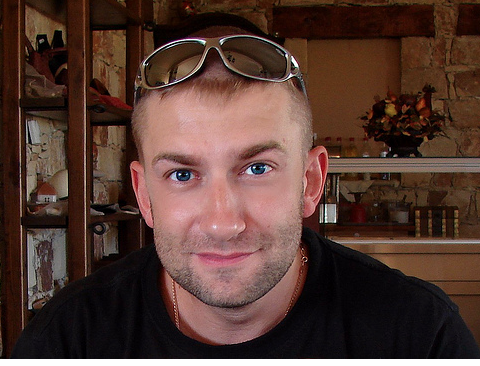

Dominic Ivanov, 26, Pittsburgh, PA
BioDominic is a 28 year old male from Pittsburgh, PA. He works as a paralegal with Edgar Snyder and has started to trade electronics, comics, and games. Dominic doesn't really look for trades, they just happen because he's at the right place at the right time. As a result, he does not do research before trading, although he knows he should. He has visited a few sites online to find quick tips but feels better getting tips from his friends because he trusts their advice.
Dominic is not "pressed for cash" and will trade at a store if it's more convenient. He does not recognize a "fair" deal and is not bothered by not getting the "best" deal.
Goals
Prior to trading at retail buy/sell/trade stores, he has traded with friends in the past and once at a flea market. His goal is to become a better trader and to begin collecting the Uncanny X-men comics. He has a few comics and his friends are long-time comic collectors.
system.